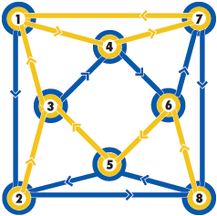
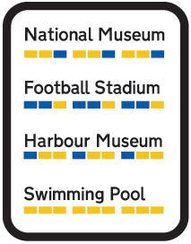
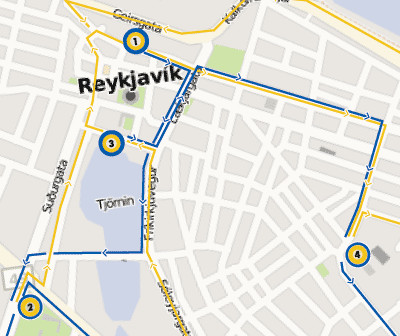
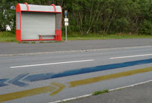

The road coloring problem is proposed as a graph theory problem, but once you understand it, the applications can be stretched into other disciplines. What the conjecture asks is: using a single set of instructions, is it possible to reach or located a destination from any other point within the network. Now, “the network” can easily be abstracted to “the city”. Imagine you arrive in a foreign city you’ve never been too before. You can’t read the language, you have no idea how to get to your destination and it is getting late. Traditionally, you might have a paper map which has issues with localization and internationalization not to mention changes since it was printed. The first hurdle is that you need to know where your destination is on the map. Secondly, you need to know where you are on the map. Couple that with the lack of local knowledge about street restrictions and the best route between the two points and things get tricky. What is needed is a simple and concise set of instructions from every possible point in the city to another.
With a road colored map, this is simple, because from any node in the network you can get to any other with the exact same set of instructions. In our case the network is made-up of city streets and intersections. Each intersection is equivalent of a node and every edge a street. Now you can get to your destination knowing a simple set of instructions from any intersection in the city. The same instructions to get you to your hotel would apply if you were standing on main street or the airport terminal. Let’s see how this works.
If we look at this example, the network has 8 nodes and each node has 4 lines radiating from it. Each line has a direction, either pointing to the node or away from it. Think of this as 8 street corners each with a combination of 4 one-way streets coming in and out.
You can select any node in the graph and use the following set of instructions to get to node 1, Blue-Yellow-Yellow, Blue-Yellow-Yellow, Blue-Yellow-Yellow. It might not be the most efficient path, but it will always bring you to node 1.
If you wanted to get to node 6 you use these instructions, Blue-Blue-Yellow, Blue-Blue-Yellow,Blue-Blue-Yellow. Every node in the city has a similar set of instructions so that no matter where you start, you will always end-up at the desired destination.
Now, imagine this isn’t a contrived graph, but a map of a city with tourist attractions as the nodes. Node 1 might be a museum, node 2 the swimming pool. Instead of having different directions to get to every destination on the map, if the map where a “road colored map” the instructions would be simple—they would be identical. This would gives tourists an easy way to remember to how to get between places.
At each destination, you could have the same signage about how to get to all the other destinations. No need to print specific directions to and from each location to the others.
The problem in real life is that the number of destinations in a city isn’t 8, it’s hundreds, which makes the graph vastly more complex. Urban expansion would be defined by how it fits into the graph—no exceptions. Since cities emerge organically, over time it would be impossible to not let an intersection be built until it connected with 3 other intersections or the re-routing of other streets. That’s just not practical urban development.
In an ideal city, we can take the road coloring idea to another level. If we abstract the color information we can take the instructions Yellow-Yellow-Blue, which are actually an arbitrary choice between 2 options, Yellow or Blue and convert them to something else. There is no reason this couldn’t be Black and White, Ying and Yang or even 1 and 0. If we move to 0 and 1, this allows us to add another layer of encoding. Each choice is one bit, Yellow-Yellow-Blue becomes 110, three bits. If we were familiar with binary we could begin to encode this as a number, 110 is 6 in base 2. Postal addresses could take on a whole new meaning. To say, “I live at 123 Main street” might be giving people everything they need to get to your house from any point in the city. 123 would convert to 001-010-111 or Blue-Blue-Yellow, Blue-Yellow-Blue, Yellow-Yellow-Yellow. This is just a fictitious scenario, to actually encode this into an existing city would be extremely difficult, if not impossible highly improbably.
In the end, this is an interesting thought experiment. The road coloring problem’s biggest asset is that the instruction set is very tiny. In this day and age of computers we should be wasteful of just about everything. The price of hardware has dropped so much it is virtually free, storage is next to free and bandwidth is trending to free. Our phones have larger and larger memory to store specific instructions rather than the small sub-set in the road coloring problem. The facets that we want to minimize, travel time and fuel are the two things that are very wasteful in this algorithm. One way this system could fully blossom would be with mass-transit. Possibly automated vehicles, you get inside, punch in your destination and it simply follows a predefined route. They don’t need to know where they are currently, just the simple pattern is needed to get to any other node in the system. If we get to the point where we have automated vehicles, then we’ll probably will have all sorts of interesting location based hardware which preempts the need for such a small instruction set of directions.
Needless to say, this is an interesting look at the possibilities of minimizing confusing directions between destinations. There might be something worth exploring further within the confines of an ideal city or on a specific subset of an existing map, such as tourist destinations or some sort of sight-seeing your where you simply start at any point on the route and can easily jump around to other parts without knowledge of your current location.